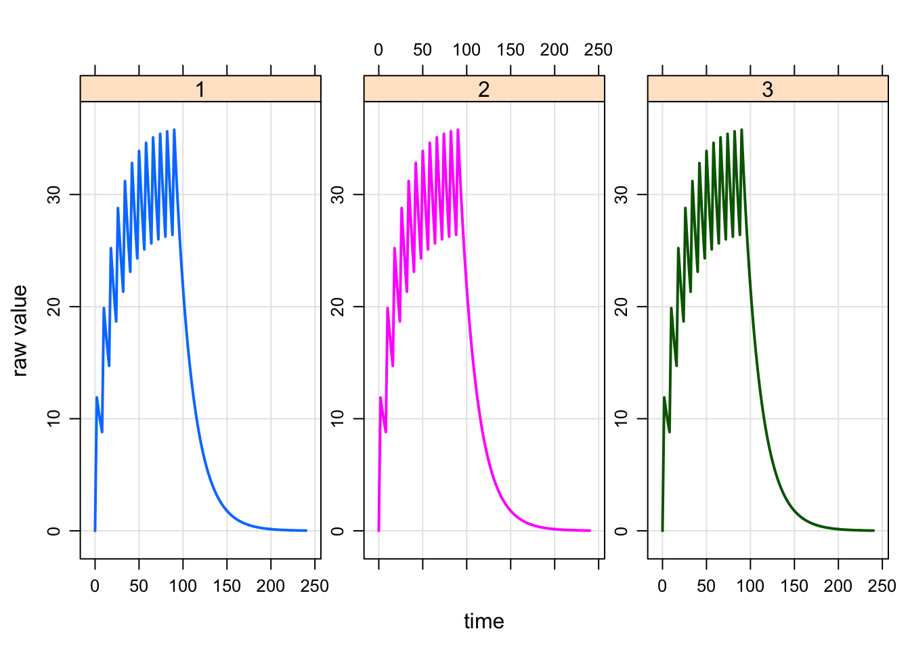
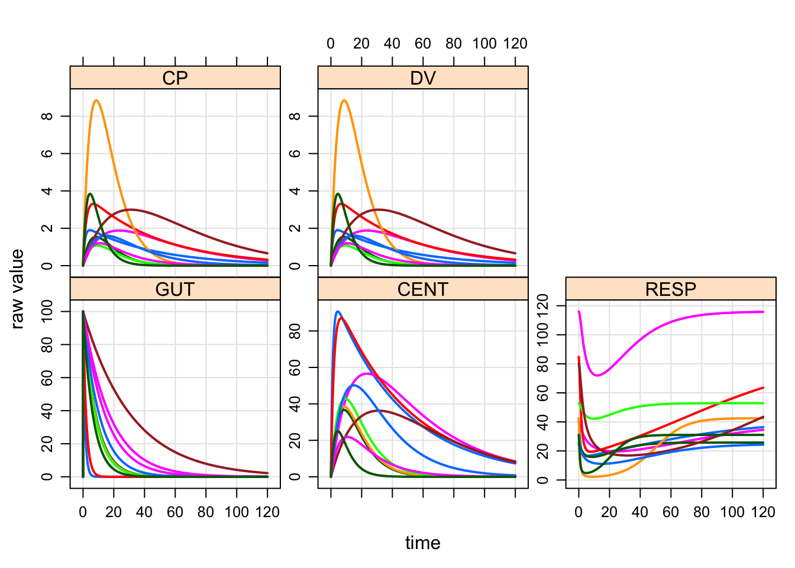

Chapter 6 Input data sets
Input data sets are used in mrgsolve to allow the user to specify interventions and input data items.
Please see the mrgsolve help topic ?exdatasets for examples of all of the data sets discussed in this chapter. The example data sets are embedded in the mrgsolve package and may be used at any time.
6.1 Overview
6.2 Event data sets
Event data sets are entered as data.frame, with one event per row. In mrgsolve documentation, we refer to these data sets as data or data_set (after the function that is used to associate the data set with the model object prior to simulation.
Event data sets have several special column names that mrgsolve is always aware of:
IDthe subject id. This id does not need to be unique in thedata_set:mrgsolvedetects an new individual when the current value ofIDis different from the immediate preceeding value ofID. However, we always recommend using uniqueID.timestates the time of the data recordevidis the event id indicator.evidcan take the values:- 0 = observation record
- 1 = dosing event (bolus or infusion)
- 2 = other type event
- 3 = system reset
- 4 = reset and dose
- 8 = replace the amount in the compartment with
amt
amtthe dose amount (ifevid==1)cmtthe dosing compartment number. This may also be a character value naming the compartment namerateif positive whenevid=1, implements a zero-order infusion of durationamt/rateiiinter-dose interval;ii=24means daily dosingaddladditional doses; a non-zero value inaddlrequires non-zeroiion the same recordsssteady state indicator; use 1 to implement steady-state dosing; 0 otherwise
6.2.1 Sorting
The IDs in the data set can appear in any order. However, an error will be generated if time on any record is less that time on the previous record within any ID.
6.2.2 Creating data sets
The expand.ev function is provided by mrgsolve to help in creating data sets of a certain style. But any R code that produces a valid data set is fine to use.
6.2.3 Example
To create a data set of 3 people each receiving 250 mg every 8 hours for 12 total doses:
data <- expand.ev(ID=1:3, amt=250, ii=8, addl=11)
data. ID amt ii addl evid cmt time
. 1 1 250 8 11 1 1 0
. 2 2 250 8 11 1 1 0
. 3 3 250 8 11 1 1 0Notice that expand.ev assumes that time is 0 and cmt is 1. To dose as a 2-hour infusion into the second compartment use:
data <- expand.ev(ID=1:3, amt=250, rate=125, ii=8, addl=11, cmt=2)
data. ID amt rate ii addl cmt evid time
. 1 1 250 125 8 11 2 1 0
. 2 2 250 125 8 11 2 1 0
. 3 3 250 125 8 11 2 1 0Use data_set to pass the data into the problem.
For example:
mod <- mrgsolve:::house()
mod %>%
data_set(data) %>%
mrgsim(end=240) %>%
plot(CP~time|factor(ID))
6.3 Individual data sets
Individual data sets are entered as data.frame with one unique ID per row. In mrgsolve documentation, we refer to individual data sets s idata or idata_set to distinguish them from event data sets (see section 6.2).
An idata_set looks like this:
data(exidata)
exidata. ID CL VC KA KOUT IC50 FOO
. 1 1 1.050 47.80 0.8390 2.450 1.280 4
. 2 2 0.730 30.10 0.0684 2.510 1.840 6
. 3 3 2.820 23.80 0.1180 3.880 2.480 5
. 4 4 0.552 26.30 0.4950 1.180 0.977 2
. 5 5 0.483 4.36 0.1220 2.350 0.483 10
. 6 6 3.620 39.80 0.1260 1.890 4.240 1
. 7 7 0.395 12.10 0.0317 1.250 0.802 8
. 8 8 1.440 31.20 0.0931 4.030 1.310 7
. 9 9 2.570 18.20 0.0570 0.862 1.950 3
. 10 10 2.000 6.51 0.1540 3.220 0.699 9Here we have an idata_set with 10 subjects, one subject per row. The ID column connects the data in each row to the data in a data_set, which also requires an ID column.
The ID column is the only required column name in idata_set and ID should always be a unique identifier for that row.
6.3.1 Use case
idata_set is usually helpful for implementing a batch of simulations when a data_set is not used. The batch may be as a sensitivity analysis or for population simulation. Usually, an events object is used with idata, but it is not required.
Use the idata_set function to pass the data set into the problem.
For example:
mod <- mrgsolve:::house()
mod %>%
idata_set(exidata) %>%
ev(amt=100) %>%
mrgsim %>% plot
Because there were 10 subjects in the idata_set, we get 10 profiles in the output. Each “individual” or “unit” received the same 100 mg dose. We would use a data_set to assign different doses to different individuals.
6.4 Data sets, the parameter list and parameter updates
6.5 Numeric data only
The data.frame holding the data_set or idata_set may have any type of data in its columns. However, only numeric data can actually get passed into the simulation engine. mrgsolve will automatically look for non-numeric columns and drop them from the data_set or idata_set with a warning.